Overview
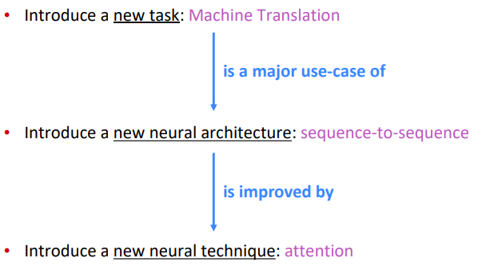
Background (Pre-Neural Machine Translation)
- machine translation (MT): sentence from source lang to target lang.
- 1950s: rule based, using bilingual dictionary.
1990s-2010s: Statistical MT (SMT)
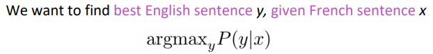
using Bayes rule: P(y|x) = P(x|y)*P(y) / P(x)
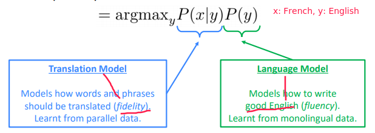
⇒ The language model we already learnt in prev lectures
⇒ To get the translation model: learn from a lot of parallel data, e.g.large corpus of English doc and French translations
and break it down with alignment a :
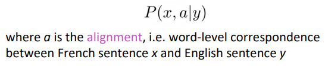
Examples of alignment: can be without counterparts, or one-to-many, or many-to-one, or many-to-many,
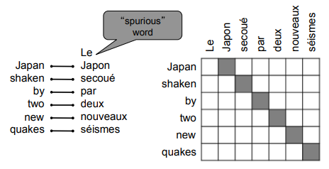

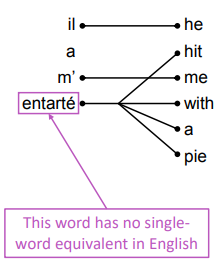
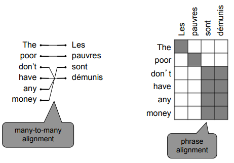
"Decoding": use heuristics to search for argmax sequence
Seq2Seq Overview
2014: NMT to do machine translation using a single neural network. architecture: seq2seq, with 2 RNNs.
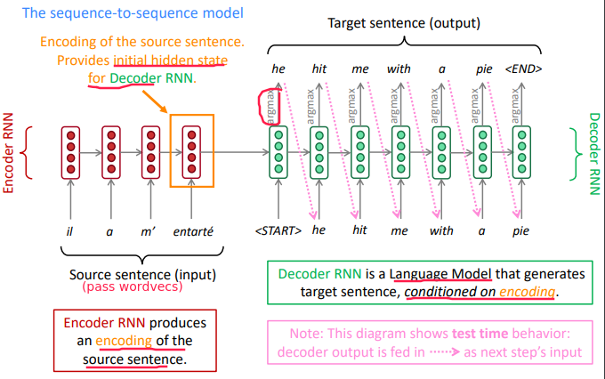
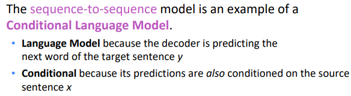
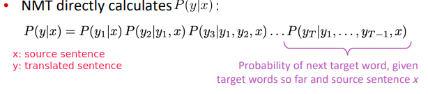
Training NMT
In decoder RNN: instead of taking argmax to gen text, take the neg log prob of the correct translated words.
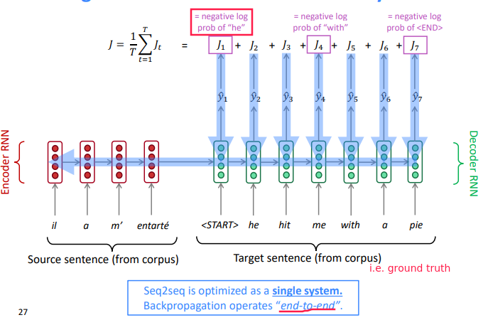
Decoding Methods
"Greedy decoding": Always take argmax at each step
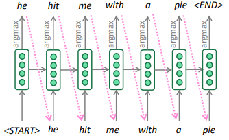
⇒ the final greedy sentence might not be argmax over all sentences
"Exhaustive search decoding":
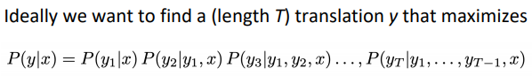
⇒ complexity O(VT) , too expensive
"Beam search decoding" (not guaranteed to find optimal solution, but very efficient.) At each step, keep track the k-most probable hypotheses (partial translations). k = beam size
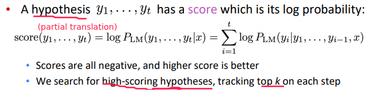
QUESTION: logP is negative, logP1*logP2 become positive?
Beam Search Example
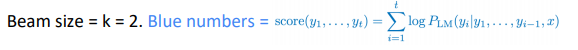
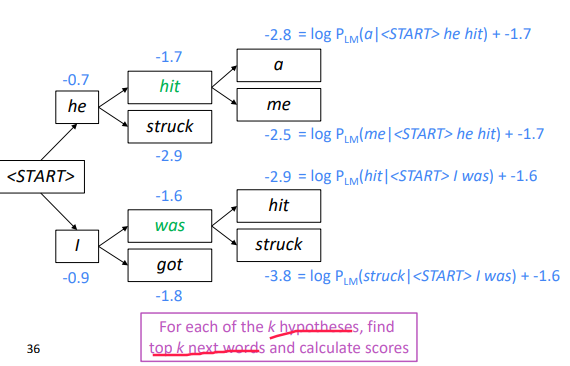
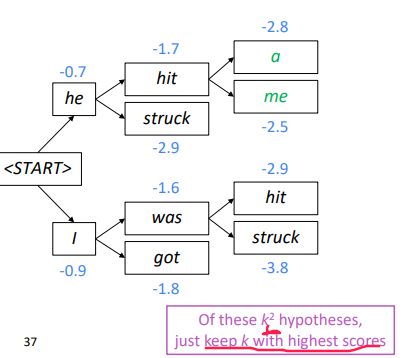
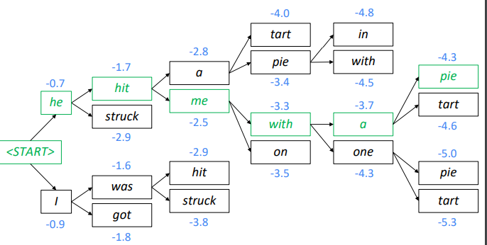
Stopping criterion
- In greedy decoding: we stop right after argmax=
<END> - In beam search:
<END>can be produced at different times
when <END> is produced, that hypothese is complete, continue exploring other hypotheses.
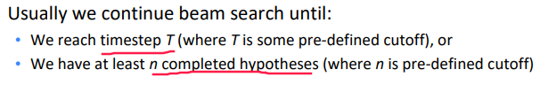
problem: longer hypotheses have lower scores ?
⇒ normalize scores by seq length:
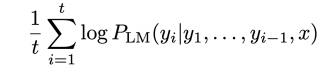
NMT Advantages & Disadvantages
Advantages
- Performance
- An e2e system: no subsystems to be individually optimized
- Much less human engineering effort
Disadvantages (w.r.t. SMT)
- less interpretable, hard to debug
- difficult to control: can't specify rules or guidelines
Evaluation
Eval metrics for machine translation: BLEU (Bilingual Evaluation Understudy) — compute similarity score between machine translations and human translations.
- based on ngram precision (n<=4): how many overlaps of 1/2/3/4-grams with human translations 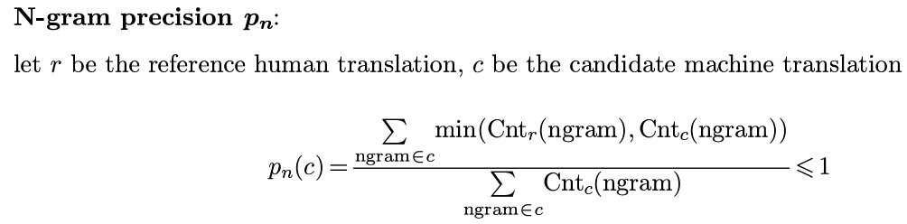
- brevity penalty: penalty for too-short system translations 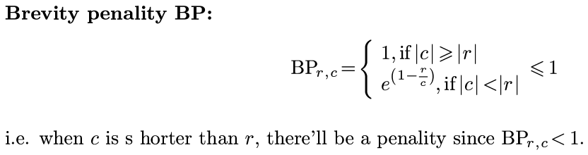
- BLEU is useful but imperfect 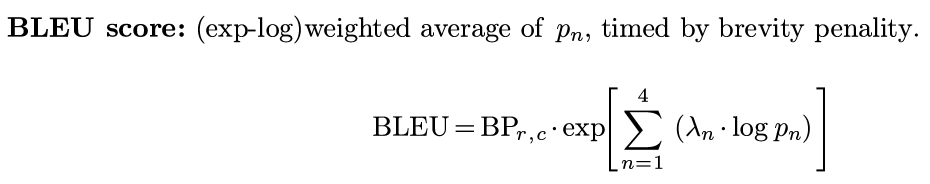
NMT outperformed tranditional SMT systems in 2016.
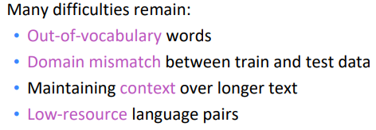
Attention Motivation and Overview
The bottleneck problem with vanilla seq2seq architecture:
depend too much on the single vector of the last encoder RNN hidden state
⇒ only the last hidden state influences decoder behavior.
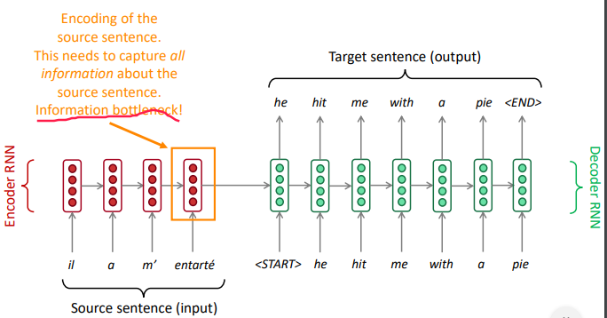
Attention mechanism:
On each step of the decoder, use direct connection to the encoder. Focus on a particular part of the source sequence
-
Compute an attention score as dot prod between the current-step decoder hidden state H(k)d and each-step encoder hidden state H(i)e.
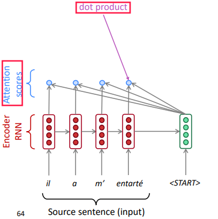
-
Apply softmax(attention-scores) to turn the attention scores into attention distribution, that shows which encoder hidden state we should focus on:
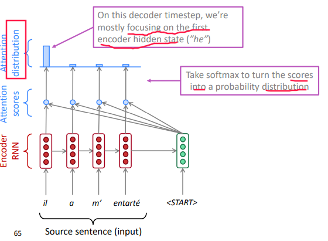
-
take the weighted average (according to the attention-distribution) of the encoder hidden states as attention output.
(this is so-called "soft alignment" as it's a distribution instead of one-hot in SMT)
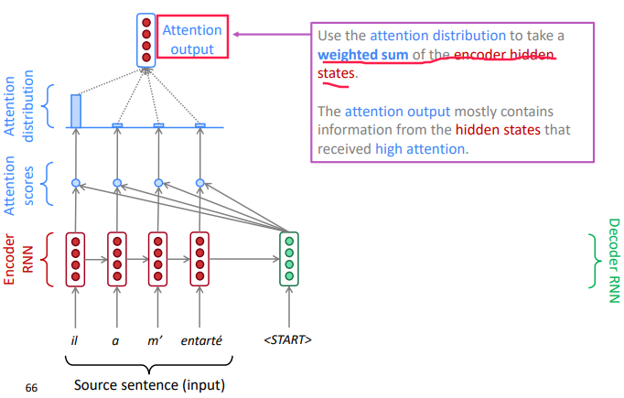
-
use the "attention output" to influence the next word prediction in decoder
e.g.concat attention output with decoder current hidden state, and compute the decoder's word distribution and output a word
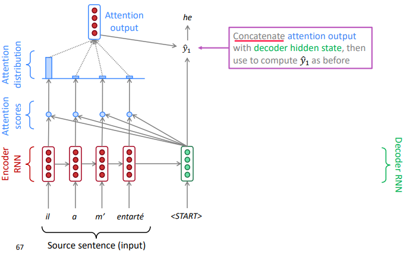
-
decoder go to the next position, and repeat
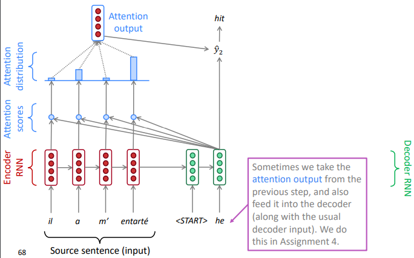
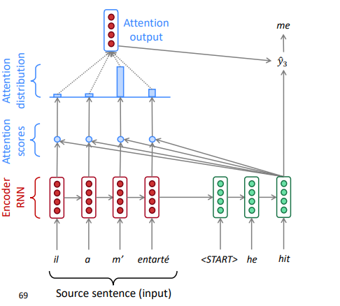
Attention Equations
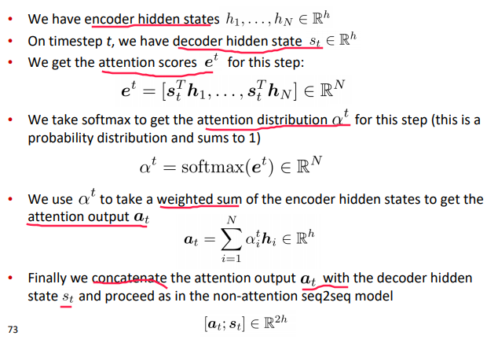
Attention Advantages
- significantly improves NMT performance: allow decoder to focus on certain parts of the source
- solves the bottleneck problem
- helps with vanishing gradient problem: have direct connections between decoder and encoder over many timesteps
- provides some interpretability
- inspecting attention distribution, we can see what the decoder was focusing on
- we get (soft) alignment for free!
- The network just learned alignment by itself
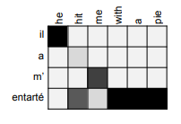
Generalization and Variants
Attention is a general Deep Learning technique You can use attention in many architectures (not just seq2seq) and many tasks (not just MT).
More general definition of attention:
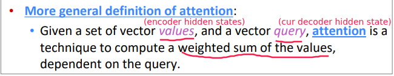
"query attend to the values"
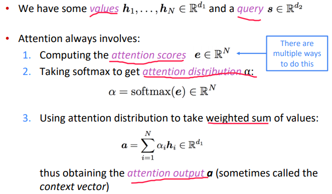
Intuition:
- The weighted sum is a selective summary of the information contained in the values, where the query determines which values to focus on
- Attention is a way to obtain a fixed-size representation of an arbitrary set of representations (the values), dependent on some other representation (the query).
Attention variants on how to compute attention score:
- Basic dot-product attention
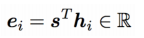
- Multiplicative attention:
use a bilinear func of query and value-i
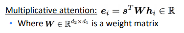
the weight matrix is learnable parameter
- Additive attention
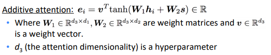
W1 , W2 and weight vector v are learnable, attention dimensionality d3 is hyperparam
Part 8 of series «XCS224N: NLP with deep learning»：
- [XCS224N] Lecture 1 – Introduction and Word Vectors
- [XCS224N] Lecture 2 – Word Vectors and Word Senses
- [XCS224N] Lecture 3 – Neural Networks
- [XCS224N] Lecture 4 – Backpropagation
- [XCS224N] Lecture 5 – Dependency Parsing
- [XCS224N] Lecture 6 – Language Models and RNNs
- [XCS224N] Lecture 7 – Vanishing Gradients and Fancy RNNs
- [XCS224N] Lecture 8 – Translation, Seq2Seq, Attention
Disqus 留言